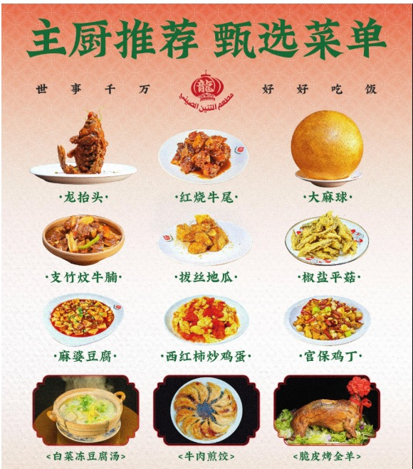
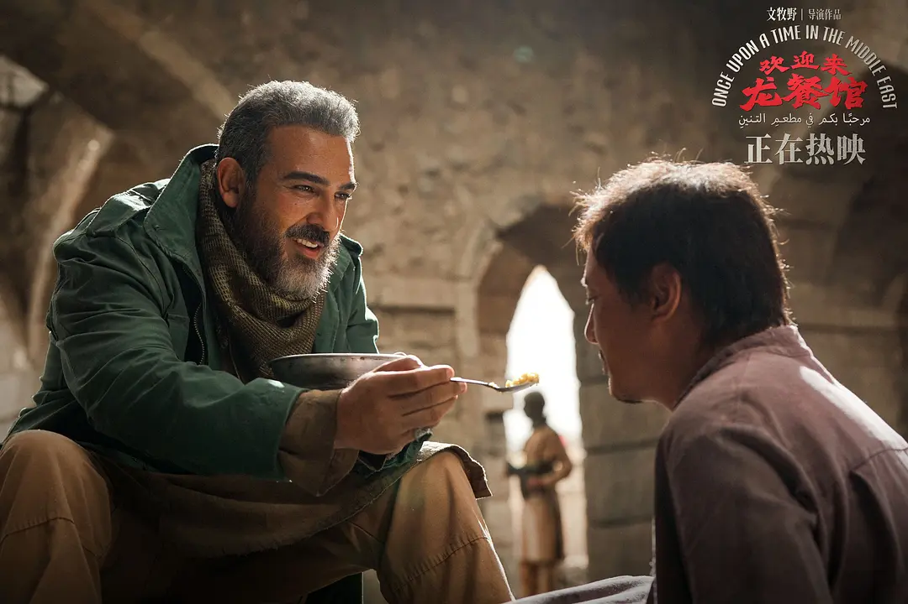
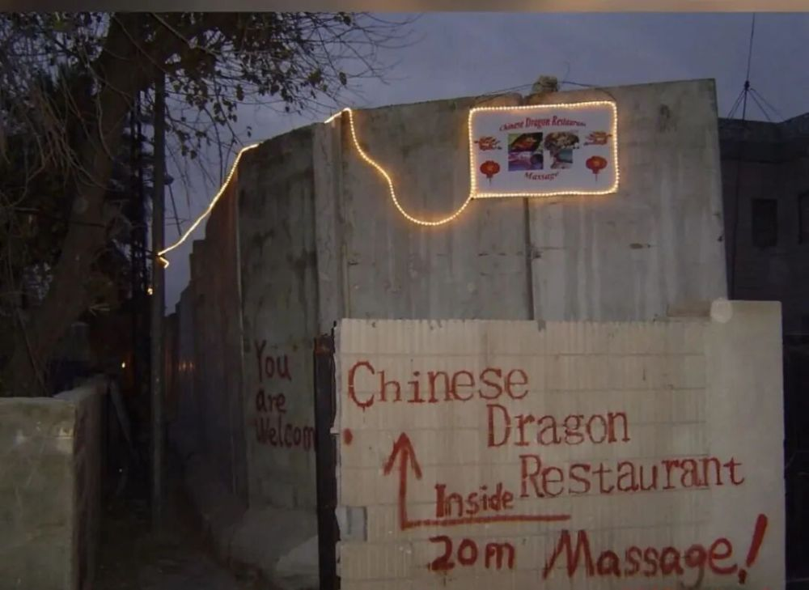
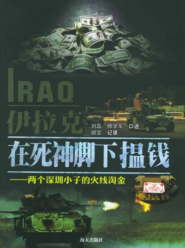
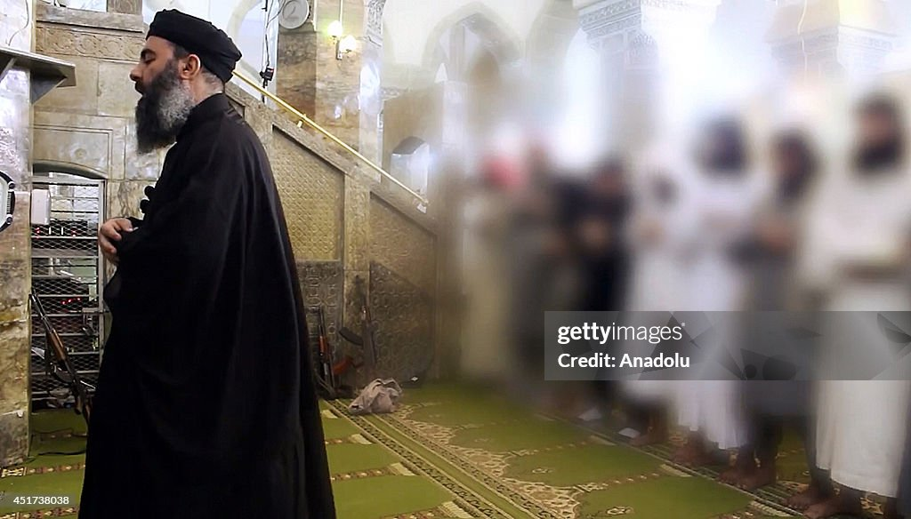
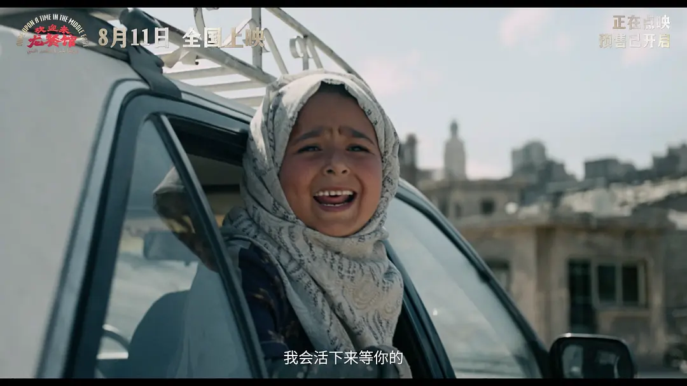
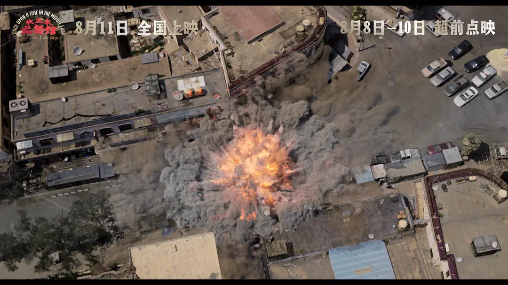
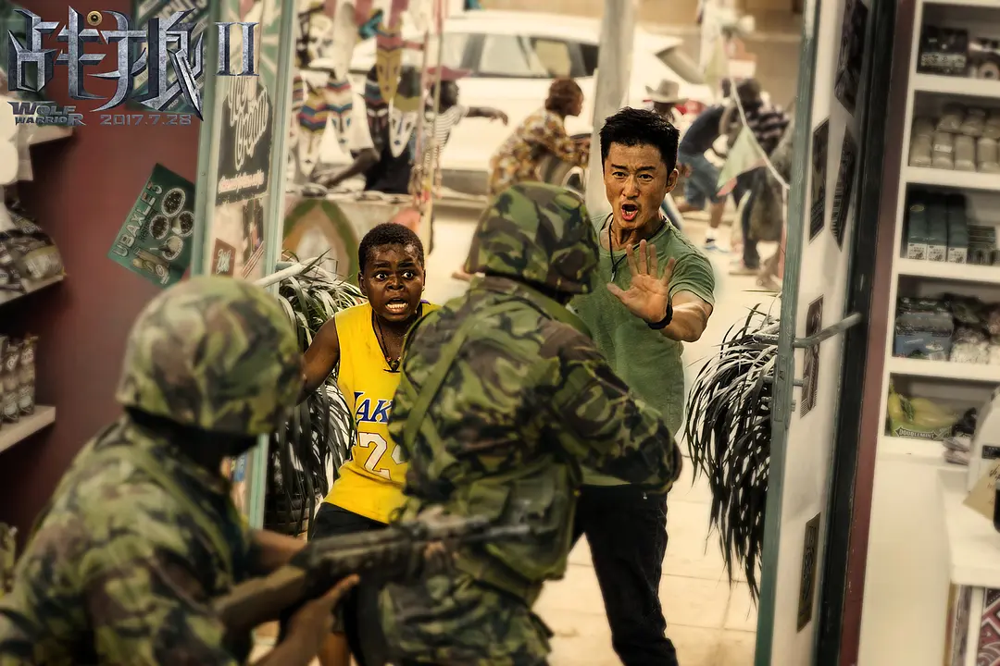
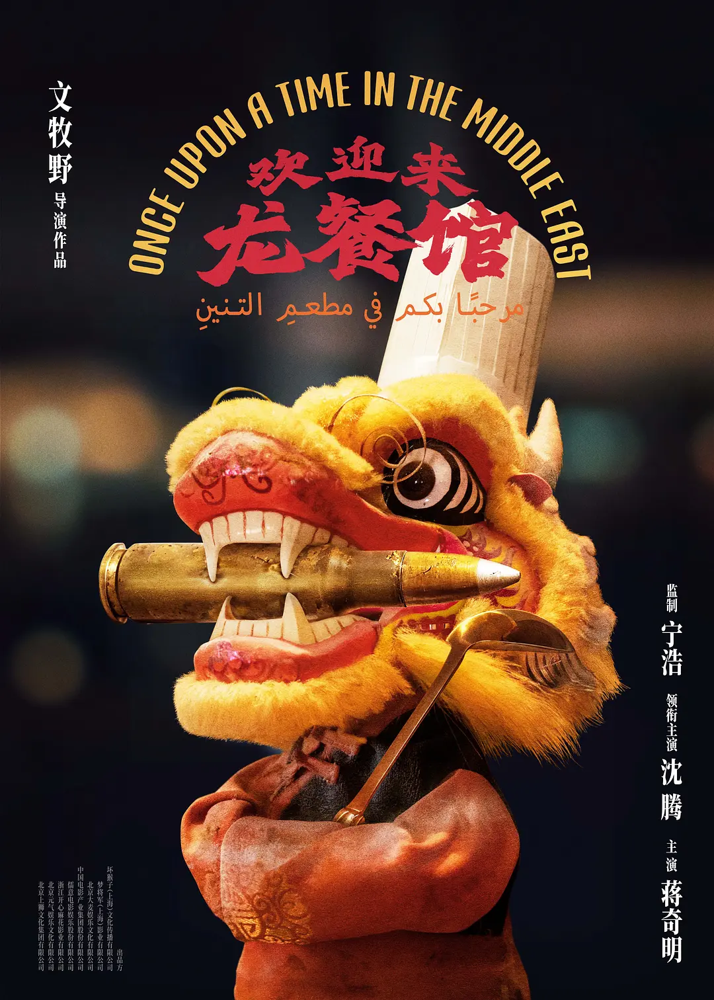

摘要
《欢迎来龙餐馆》让「日子人」伦理在战争中失效，又借助被压平的中东历史和去政治化的「儿童」，为徐福寻找从旁观走向介入的理由，由此暴露出一个意识形态症候：中国已经无法置身世界之外，却仍没有形成一套能够同时解释自身全球利益、他者政治主体性与跨国责任的政治语言。
「太咸了。」
徐福第一次给扎伊德做饭，这位「中东人」尝了一口后，只说：「太咸了」。大厨徐福当然不服。他做的是「正宗中餐」，问题只能出在扎伊德的舌头上。电影走到最后，经历死亡、恐袭和逃亡，徐福支起一口锅，做了一顿烩饭。扎伊德又尝了一口，还是那句：「太咸了」。1
这大概是《欢迎来龙餐馆》（以下简称《龙餐馆》）最好的一个笑话。一切都变了，只有中国厨师依然相信自己知道一顿好饭应该是什么味道。
导演文牧野把「好好吃饭」说成整部电影最朴素的愿望。他提到母亲教给自己的生活原则：「好好吃饭，好好养孩子」，食物里包含着「中国人看待自身乃至世界的方式」。2

问题于是从盐开始：一个中国人把自己认定的「正宗中餐」端到世界面前，世界尝了一口，说：「太咸了。」这究竟意味着什么？为什么我们如此确信，自己知道一顿好饭应该是什么味道？
我想把我的判断说得更明确一点。《龙餐馆》无意间拍出了今天中国面对世界时的一种意识形态困难：中国已经如此深深地进入世界，却仍习惯把这种进入理解为贸易、劳动和发展。政治最好留在餐馆门外。「龙餐馆」就是承载这个愿望的乌托邦。「龙餐馆里只有和平和美食」3，这句话看似很谦卑，实际潜伏着巨大的野心：它宣称存在一个比宗教、民族和政治冲突更加基础的共同世界。在这个世界里，大家都要吃饭，都要养孩子，那么只要回到生活本身，许多分歧就可以被暂时搁置。
地方味道
这种想象并不虚假。我甚至很难完全摆脱它。过去几十年中国经验中最有说服力的部分，就来自这样一种近乎固执的物质主义：先忙起来，先让人工作，先让道路和商品流动起来。很多宏大的政治激情在收入、住房和教育面前逐渐降温。真正值得追问的是这里面的时间顺序：「先」过日子，政治问题以后再说，这种「日子人伦理」暗中相信，日常生活拥有一种比政治更强的力量，最终能把政治吸收进去。
所以扎伊德那句「太咸了」，在徐福这里显得如此刺耳。
徐福以为自己只是做饭，扎伊德提醒他，味道也有地方性。你以为端出去的是人类最低限度的共同需要，对方接收到的已经是一套关于「怎样生活才算正常」的价值判断。「好好吃饭」可能的确比狂热的圣战可爱得多，我也愿意站在前者这边。可它仍然携带价值排序。一个人失去妻女以后，你劝说他拿枪复仇不如把剩下的日子过好，一个群体认定自己的尊严正在受到军事占领和政治压迫时，你告诉他们发展和稳定比继续武装斗争更有意义。
无论这些判断多么具有「智慧」，但它们都已离开了中立的位置。

这还只是笑话的一半。
电影有意把真实的「中国龙」餐馆变得更坚持「中国口味」。
2003年夏天，32岁的刘磊辞掉深圳一家软件公司的工作，把3500美元缝进运动鞋，从香港飞往约旦，再沿着约伊公路进入巴格达。出发前，他花了一个月研究地图和战地生存知识。他不认为自己是在「冒险」，而叫它「探险」：军人哪里乱往哪里去，商人则要学会哪里乱躲哪里。4
刘磊抵达巴格达后，凌晨仍有40摄氏度，萨达姆政权刚刚倒台，城市物资紧缺。在他的「中国龙」餐馆里，一瓶酱油甚至要兑进五瓶矿泉水，才能熬出够用的调味汁。5这家餐馆最早开在外国记者集聚的酒店附近，但几个月后就濒临破产，餐馆便搬进了美军控制的绿区，厨房开始为美军顾客做改良中餐。酸甜鸡、将军鸡、炒饭、宫保鸡丁，哪一种卖得出去就做哪一种6，两美元买来的威士忌，美军愿意花十美元买。有时七八辆M1A1坦克停在餐馆门外，只为了让士兵下来吃饭喝酒。7

2004年，来自江西宜春的老同事帅学军也辞职奔赴巴格达8，他们继续给美军做饭，也继续在爆炸声里挣钱。他们最初是把赚来的美元塞进天花板保存，塞不下后，就通过没有印章和钢印的地下钱庄汇回深圳。9

现实里的「中国龙」几乎没有徐福关于「正宗」的焦虑。现实中的中国商人更加彻底地接受了市场逻辑：谁是顾客，谁就决定味道。但电影中的徐福，不是一个首先表现为适应环境、识别风险和抓住市场的全球化中国人，而是一个必须携带「中国式生活伦理」走向世界的主体。
从这里开始暴露了某些关键性症候：中国今天需要为自身的全球存在寻找一种能够被输出的价值语言，可影片真正端出来的「中国式生活伦理」，并没有从中国海外劳工实际进入世界、适应世界的经验中生长出来。中国成为全球性力量的现实实践走在了文化自我理解之前。于是电影不得不替现实经验补上一项它原本没有承担的使命——让徐福不只适应世界，还要向世界说明「中国意味着什么」。
「中东」不是「平」的
战争很快就把这套悬浮的餐馆哲学拉回了中东的地表。
电影里有一句非常直接的质问。徐福一直说战争与自己无关，直到美军告诉他：
施暴者是你的合伙人，死者是你的朋友，你还觉得战争与你无关吗？
这句话几乎可以被看作整个故事的真正起点。
徐福原先相信自己只是一个「日子人」，他是来中东挣钱的中国厨师，战争只属于当地人。电影接下来花了很长时间证明：经济活动从来不在政治真空中进行。
这也是今天中国与世界关系最具体的变化。中国企业、劳工、资本和基础设施早已进入许多政治并不稳定的地区。中国政府也越来越频繁谈论「海外利益保护」，把外交、领事保护、撤侨护航、风险预警和国际合作纳入国家安全实践。10「战争与我无关」越来越像一种无法维持的自我安慰。
问题恰好出现在这种自我安慰失效以后：既然有关，究竟是什么关系？如果商业利益已经把你卷入当地社会，你承担什么责任？如果当地秩序开始杀人，你能够做到哪一步？
电影走到这里，本来可以真正进入中东。但它却把中东压「平」了。
文牧野有意把地点虚构为「巴哈塔」，也说过不希望故事被锁死在某一场具体战争里。11但影片调用的历史记忆却非常明确：大规模杀伤性武器、美军入侵、武装抵抗、自杀式袭击、圣战组织、儿童军事化，几乎都把观众推向2003年以后的伊拉克。
于是出现了一个奇怪的效果：电影借用了足够多的伊拉克，使我们知道它在谈什么；它又抽掉了足够多的伊拉克，使我们无法继续理解、追问和做任何一种判断。
我也很自然地从「校长」联想到巴格达迪。因为阿布·贝克尔·巴格达迪2004年就曾被关押在美军布卡营，后来领导ISIS。如果把电影重新放回真实时间，「校长」的事业没有随着故事结束，十年以后，他所代表的政治力量一度摧毁伊叙边界，控制数百万人口，建立了自己的领土政权。巴格达迪直到2019年才在美军行动中死亡。12 影片里的儿童军事化也更接近ISIS成熟时期的组织实践。13
即使「校长」无法被认定为巴格达迪，更有意思的问题已经出现：为什么电影让我们产生了这样的联想？电影在这种含混与错乱中，把美国入侵以后十余年的政治史折叠进了同一个扁平、模糊的「二十年前」。
这里制造的问题远比「去历史化」要严重得多。

现实中的ISIS并非从废墟里自行生长出来的政治组织。2003年5月，占领当局启动去复兴党化，随后解散伊拉克军队等国家机构，此后的逊尼派政治边缘化、伊拉克政府日益严重的宗派政治，以及叙利亚内战造成的权力真空，为ISIS在部分逊尼派地区打开了扩张的空间。14逊尼派社会本身也从未整齐地站在ISIS一边。伊拉克逊尼派部族曾经与基地组织伊拉克分支交战，叙利亚逊尼派反政府武装后来同样大规模攻击ISIS。15
这意味着电影压缩掉的恰好是最困难的部分：同一个逊尼派社区可能先反抗美军，随后与美军合作打击基地组织，几年后又因不满巴格达政府而重新接受反政府武装。政治身份会随敌友关系和国家权力的变化重新组合。所谓爱国者、抵抗者和恐怖分子之间没有一条能够靠服装与配乐辨认的天然边界。
一旦把这些历史放回来，影片的政治结构立即变得危险。「中东」于是只能作为一组熟悉的新闻「景观」出现，电影必须把历史抽走，才能维持自身的伦理地图，否则「普通人—恐怖分子—美国大兵」各自独立、稳定的伦理位置就会立即崩溃。
介入的理由？
在电影勘定的这个伦理地图中，美国人的介入很自然地受到批判：一个外部强权以自己的判断进入别国，摧毁既有秩序，造成它不能控制的后果。伊拉克战争已经给这种批判留下了过于充足的证据。中国观众很容易接受这一点，我也接受。
但是，徐福后来同样介入了。
影片必须证明：为什么美军的介入可疑，徐福的介入却值得赞美？
电影最后找到的解决办法就是「儿童」。

「他们不是你的孩子。」
「那也是孩子。」

这句台词出现了两次，主创也明确把它当作徐福由自保转向救人的关键。16 儿童在这里完成了一项非常精确的政治工作：他们把政治暂时取消了。
于是，「巴哈塔」在地理上抹去了政治边界，「儿童」则在人身上完成同样的工作：只有当中东及其中东人都被暂时抽去政治历史，徐福的人道主义才能畅通无阻。
因为一个「成年中东人」太麻烦了。他可能支持过萨达姆，可能参加反美抵抗，可能支持新的政府，也可能再次反对它。他的宗教信仰、家族关系和政治选择都可能改变他与我们的关系。他有自己理解正义的方式。我们一旦真正面对这样的「成年中东人」，「救援」就会迅速变成政治判断。「儿童」恰好被安置在这些选择发生以前，徐福也就终于获得一个无需解释的行动理由。
影片完成了一次漂亮的尺度转换。美国是国家，所以美国的介入必须回答主权、战争合法性和政治后果的问题。徐福只是一个厨师，他救一个孩子不需要国际法授权。
可影片一直不断邀请我们把徐福理解成「中国人如何面对世界」的代表。文牧野自己说，电影希望和「我们现在中国人生活的时代」发生关系。17 于是，那个被个人善意暂时遮住的问题便会重新回来：
当「徐福」变成国家以后怎么办？
在《战狼2》之后

这正是《战狼2》和《龙餐馆》应该放在一起讨论的理由。两部电影都在处理同一个极少被大陆商业电影认真处理的问题：中国已经走向世界以后，中国人如何在世界中行动？
《战狼2》的答案带着鲜明的历史时间。吴京谈到片尾那本中国护照时，直接提到自己1980年代出国办签证时遭遇的屈辱，甚至说当年就想「别等我们中国牛了」，现在终于等到了。18 所以《战狼2》的基本问题可以追溯到十九世纪以来那条中国人极其熟悉的叙事：过去的中国保护不了自己的人民，现在可以了。中国的崛起首先表现为，中国公民在海外不再任人宰割。
《战狼2》并没有完全无视外国人，冷锋也会拯救当地居民。可整个行动的正当性始终有一个稳固支点：中国公民、中国护照，以及一个有能力把自己人接回家的国家。现实中的利比亚、也门撤侨又给这个想象提供了经验基础。2015年也门撤侨时，中国海军同时帮助15个国家的279名外国公民撤离。19 这种「世界主义」可以从民族国家内部向外延伸：先获得保护自己人的能力，然后允许力量溢出，顺便保护别人。
《龙餐馆》把这个答案逼到了问题的边界。在文牧野架构的时空里，没有一支中国军队等在海岸，护照无法解决任何问题，领事保护也退出了叙事中心。徐福最后必须冒险去救的又恰恰是外国儿童。民族国家那条已经被《战狼2》证明过的理由突然不够用了。
于是两部电影形成了一条连续的问题链：《战狼2》处理中国崛起以后「我们能否保护自己」，《龙餐馆》开始碰到「我们的力量对别人意味着什么」。后一个问题已经走出民族的屈辱史并进入政治哲学：当陌生国家的人遭遇屠杀、饥荒和战争，一个大国究竟负有什么责任？
两个问题并非完全割裂，在《龙餐馆》中缠绕到了一起。「领事馆」在电影中的消失，并非一个情节漏洞，而是将两个问题合并在了一起，或是推到了的极限：如果拒绝介入当地的战争和政治秩序，我们真的能够长期保护自己的海外公民和经济利益吗？中国海外利益扩张的现实本身就在不断缩短「保护自己」与「介入当地秩序」之间的距离。
还能只做生意吗？
然而，真正的困难是，中国自己的国际政治经验限制了更多的政治想象。
「不干涉别国内政」，并非外交套话。中国对于「保护责任」的正式立场长期坚持当地政权承担保护本国人口的首要责任。20伊拉克已经证明，一个大国完全可以带着民主、人权和解放的语言进入别国，最后留下国家崩溃与长期战争。21中国因此始终强调主权、《联合国宪章》与和平手段。
我没有办法因为同情电影里的孩子就轻率地说，这套「不干涉」原则应被抛弃。但我也没有办法在这里停下来。
假如制造大规模暴力的就是与中国建交的当地政权呢？假如它不允许救援进入呢？假如安理会因为大国之间的否决陷入瘫痪呢？如果坚持未经同意不得强制介入，那么外部世界究竟准备看着多少人死去？
「呼吁和平」到这里已经无法自动产生答案。而中国恰好越来越难以回避这个问题。经济规模和海外利益把中国带进许多政治冲突的现场，但中国自身关于国家统一、安全与政治秩序的核心主张，又决定「不干涉原则」无法仅被当作一套处理海外问题时可以随意调整的外交工具。22因此，中国很难放松对强制干涉的警惕。但一个拥有庞大海外利益、安理会常任理事国席位和全球政治影响力的国家，也很难重新退回「我们只做生意」的位置。
徐福的最初愿望对应着中国的一种很熟悉的国际想象：我来修路、我来投资、我来做买卖，我们有分歧也没关系，先把生意做起来，先把生活过起来。但如果道路旁边正在发生屠杀，工厂所在的国家可能陷入内战，你的员工被绑架，你的投资也依赖某个政治力量的保护，你就已经进入了政治。所谓「不介入」有时只是拒绝承认自己已经身处其中。
《龙餐馆》非常残忍地证明了这一点：徐福没有主动选择战争，战争依然替他选择了一个位置。
「具体的人」并不具体
所以我不太同意很多评论说文牧野「没有站队」「太讨巧」。影片的摇摆本身就是今天国际关系意识形态症候的一部分。《龙餐馆》找到了一个足以让几乎所有中国观众同意的最低伦理，却无法找到把这个伦理转换成国际政治行动的稳定原则。
这也解释了影片的后半段为什么越来越依赖视听中的苦难来推进节奏。当政治判断无法继续向前，电影只能不断提高受害者的无辜程度。等到炸弹被绑在孩子身上，我们自然不会继续追问徐福有没有资格介入。苦难的情感强度替影片完成了行动的正当性证明。
可现实中的孩子不会永远停在电影里的年龄。他会长大，会选择政治，会加入组织，甚至可能拿起一支我们并不赞同的枪。真正的国际政治恰恰发生在这个时刻：对方已经无法被还原成纯粹受苦的生命，我们仍然必须决定怎样与他相处。
于是我又想到那句「太咸了」。
中国人端出一锅饭，相信和平、发展和「过日子」拥有普遍的说服力。世界尝了一口，说：「太咸了。」
这并不意味着应该把桌子掀翻，它只是意味着，对方终于开始说话。《龙餐馆》真正让我不安的地方，恰好是「中东人」直到最后也没有获得足够的声音。中东作为一段政治历史消失了，只剩美军、恐怖分子和儿童。徐福因此能够爱一些人，却不必真正理解他们。他坚持面对「具体的人」，电影却提前剥离了宗教经验、政治诉求和历史选择这些使一个人具体起来的东西。
这大概是「日子人政治」最难处理的悖论。它相信自己尊重「具体的人」，爱着「具体的人」，因为它拒绝讨论宏大的主义。但对很多人来说，军事占领、政治压迫、宗派身份恰恰就是他们的生活。他们无法在进入餐馆以前，先把这些东西寄存在门口。

怎么办？
《龙餐馆》已经比《战狼2》走得更远。《战狼2》还可以用「中国终于强大」结束问题，《龙餐馆》却发现，强大本身会制造新的问题。力量越能抵达远方，中国就越难只对自己负责。海外利益越庞大，也越需要某种区域秩序来保护它。然而，一旦参与维护秩序，又必须解释自己维护什么，支持谁，又准备在什么条件下使用力量。
我不知道答案。
伊拉克战争让我无法轻信任何一种「干涉主义」，但儿童身上的炸弹又让我无法把主权当成问题的终点。我很难舒服地选择任何一个已经准备好的答案。但政治要求你必须有所决断。
《龙餐馆》没有解决这个冲突，这正是它值得被认真对待的原因，它在游移、矛盾和自我质疑中将这个冲突撕开，暴露了当今国际关系领域普遍的意识形态症候。
中国已经深深进入世界，还能不能永远只做那个邀请大家坐下来吃饭的人？战争已经替徐福回答过一次。既然我们已经坐在桌边，甚至越来越有能力决定桌子会不会被掀翻，我们准备承担什么责任，又依据什么理由判断别人的饭应该是什么味道？
扎伊德尝了一口。
还是「太咸了」。